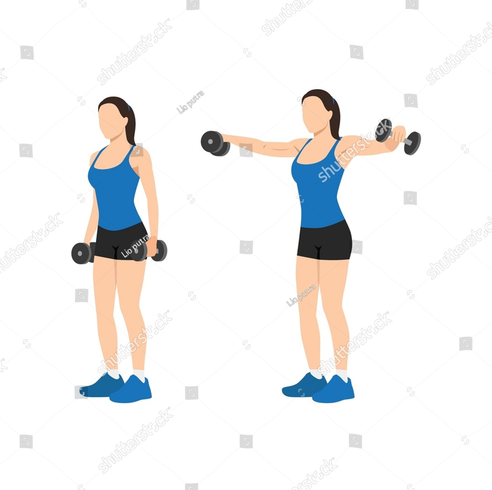

Exercise Description
Stand with feet shoulder-width apart, holding dumbbells at your sides with palms facing inward. Lift the dumbbells out to the sides until they reach shoulder height, then slowly lower them back to the starting position.
Reps and Sets
Beginners: 3 sets of 12-15 reps
Weights: 10-15 kg dumbbell per hand
Rest time between each set: 45secs
Video Implementation